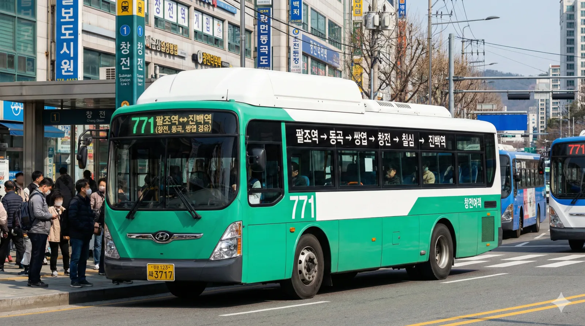

| 기점 | 팔조역 |
|---|---|
| 종점 | 진백역 |
| 운수사 | 창전여객 |
| 배차간격 | 4~7분 |
| 연계 철도역 |
효빈 버스 771은 효빈광역시 창전구 팔조동(팔조역)과 창전구 진백동(진백역)을 연결하는 단거리 고수요 지선버스 노선이다.
 |
| 771번 버스 운행 모습 |
| 🚌 효빈 버스 771 | |||||
| 기점 | 팔조역 | 종점 | 진백역 | ||
| 순방향(771) | 첫차 | 04:52 | 역방향(771-1) | 첫차 | 05:01 |
| 막차 | 23:57 | 막차 | 00:07(익일) | ||
| 배차간격 | 평일 4~7분 / 주말 9~10분 | ||||
| 운수사명 | 창전여객 | 인가대수 | 29대 | ||
| 노선 | |||||
| * 볼드체로 표시된 구간은 양방향 모두 정차하기 때문에 행선지를 확인하고 탑승해야 한다. | |||||
효빈광역시 창전구 팔조역에서 출발하여 진백역까지 운행하는 지선버스 노선이다. 창전구 내 주요 거점을 촘촘하게 연결하며, 짧은 배차간격으로 높은 이용률을 보이는 노선이다. 771-1번은 이 노선의 역방향 노선이다.
※ 교통 상황에 따라 오차가 발생할 수 있습니다. (평균 5분 간격 고정 배분)
| 회차 | 순방향(771) 출발 | 역방향(771-1) 출발 |
|---|